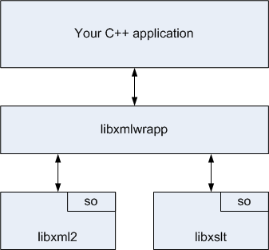

Overview
Introduction
The NCBI C++ Toolkit has incorporated and enhanced the open source XmlWrapp package, which provides a simplified way for developers to work with XML. This chapter discusses the NCBI-enhanced XmlWrapp package and how to use it.
Chapter Outline
The following is an outline of the topics presented in this chapter:
General Information
libxmlwrapp is a generic XML handling C++ library built on top of widespread libxml2 / libxslt C libraries. The main features of libxmlwrapp are:
Tree parser (DOM)
Event parser (SAX)
Creation / removal of nodes, attributes and documents
Searching nodes and attributes
XSLT transformation support
DTD validation support
XML catalog support
In addition, NCBI has enhanced libxmlwrapp by:
Adding support for XPath.
Implementing full-featured XML namespace support for both nodes and attributes.
Adding XSD validation support.
Extending the functionality of some existing classes.
Adapting the demo code and test cases to work within the NCBI framework.
Fixing some bugs in libxmlwrapp.
The figure below illustrates the relationship between your C++ application and the XML libraries:

One goal of the libxmlwrapp library is to be a very thin wrapper around libxml2 / libxslt and to provide a simple yet powerful C++ interface without compromising speed. To achieve this goal, the library does not implement expensive run-time validity checks, and it is possible to write compilable C++ code that will cause a segmentation fault. For example, it is possible to create an unsafe libxmlwrapp namespace object that points to an existing libxml2 namespace, then destroy the pointed-to namespace. This results in the unsafe libxmlwrapp namespace object containing a dangling pointer. Subsequent access of the pointer will cause an exception or abnormal termination.
The original open source libxmlwrapp 0.6.0 was extended and modified to fit the NCBI C++ Toolkit build framework and API functionality requirements. Later, the functional changes introduced in 0.6.1 and 0.6.2 were patched into the NCBI code. Specific NCBI enhancements to libxmlwrapp include:
XPath support:
XPath queries can be run based on XPath expressions. The queries return node sets which can be iterated.
A new class, xml::schema, was added for XSD support.
Implementing a full-featured XML namespace class, for use by both nodes and attributes, with these features:
Each node and attribute may be assigned to a namespace, or have their assignment removed. The assigned namespace can be retrieved.
Each node and attribute may contain a list of namespace definitions. Namespace definitions can be added to or removed from this list. The list can be retrieved.
libxmlwrapp namespace objects can be either safe or unsafe. Safe namespace objects prevent program crashes by eliminating potentially invalid pointers. Using unsafe namespace objects requires less time and memory, but may result in invalid pointers and may cause a crash. See the safe and unsafe namespaces section for more details.
Nodes and attributes can now be searched by namespace as well as by name.
Error handling was enhanced (or added) for tree and event parsing, and for DTD and XSD validation. Formerly, only the last message was retained and processing stopped on the first error. Now all messages are retained and processing only stops if a fatal error is encountered.
Adapting the demo code and test cases to work within the NCBI framework.
Fixing some bugs in libxmlwrapp:
libxmlwrapp 0.6.0 did not copy the namespace when it copied an attribute. The NCBI enhancement copies the assigned namespace (and all namespace definitions contained by an attribute) when it is copied.
The Sun WorkShop compiler failed to compile libxmlwrapp 0.6.0 because it was missing a definition for the STL distance algorithm. The NCBI enhancement conditionally defines this template for this compiler.
The XML parser in libxmlwrapp 0.6.0 failed to detect a certain form of mal-formed document. NCBI found and fixed this bug. The patch was submitted to the libxmlwrapp project and was accepted.
The NCBI enhancements retain the generic nature of libxmlwrapp, and are not tailored to any particular application domain.
libxmlwrapp demo applications and unit tests are available inside NCBI, but the most common and basic usage examples are given in the next section.
All the libxmlwrapp functionality resides in the the C++ namespaces xml:: and xslt::, and all the code is Doxygen-style commented.
XmlWrapp Classes

The figure above shows the most important classes in the libxmlwrapp library. XML can be parsed from a file, memory buffer, or stream, creating a libxmlwrapp document object. One of the most important things you can get from the document object is the document root node.
Several classes in the figure are marked with the small "circled-i" symbol in the corner. This mark means that the class supports iterators and const iterators. The node class is a container of other nodes and you can iterate over immediate node children similar to how you do with STL containers.
A node may have an XML namespace and also may define namespaces. To support this, libxmlwrapp provides the XML namespace class, ns.
An XML node may have attributes as well, so libxmlwrapp has the attributes class. This class is a container of attributes so both const and non-const iterators are provided.
The XPath support includes the xpath_expression and node_set classes. xpath_expression objects hold a single expression. node_set objects are created as the result of executing an XPath query for a given node. The node_set class is a container so it supports iterators.
To support XSD schema validation and DTD validation, libxmlwrapp has the schema and dtd classes. These classes work together with the document class.
Warnings, errors and fatal errors may occur during the parsing and validating. To collect them, libxmlwrapp provides the error_messages class. The error_messages class includes the print() method, which returns a string containing a newline-separated list of messages. It also includes the has_warnings(), has_errors(), and has_fatal_errors() methods in case you are interested in the presence of a specific type of message. Note that errors and fatal errors are considered separately, so has_fatal_errors() may return true while has_errors() returns false.
How To
This section includes compact code fragments that show the essence of how to achieve typical goals using libxmlwrapp. The examples do not illustrate all the features of libxmlwrapp and are not intended to be complete and compilable. Your code will need to include the necessary headers, use try-catch blocks, check for errors, and validate the XML document.
Create a Document from an std::string Object
std::string xmldata( "<TagA>"
"<TagB>stuff</TagB>"
"</TagA>" );
xml::document doc( xmldata.c_str(), xmldata.size(), NULL );Create a Document from a File
xml::document doc( "MyFile.xml", NULL );Note: The second parameter above is a pointer to an error_messages object, which stores any messages collected while parsing the XML document (a NULL value can be passed if you're not interested in collecting error messages). For example:
xml::error_messages msgs;
xml::document doc( "MyFile.xml", &msgs );
std:cout << msgs.print() << std:endl;Save a Document or Node to a File
The simplest way is inserting into a stream:
// save document
xml::document xmldoc( "abook" ); // "abook" is the root node
std::ofstream f( "doc_file.xml" );
f << xmldoc;
f.close();
// save node
xml::node n( "the_one" );
std::ofstream node_file( "node_file.xml" );
node_file << n << std::endl;
f.close();The simplest way provides no control on how the output is formatted, but there is an alternative set of functions that accept formatting flags:
xml::document::save_to_string(...)
xml::document::save_to_stream(...)
xml::document::save_to_file(...)
xml::node::node_to_string(...)For example, if you do not want to have the XML declaration at the beginning of the document then you might have code similar to:
xml::document doc( "example.xml", NULL );
std::string s;
doc.save_to_string( s, xml::save_op_no_decl );For a complete list of available formatting flags, see enum xml::save_options.
Iterate Over Nodes
xml::document doc( "MyFile.xml", NULL );
xml::node & root = doc.get_root_node();
xml::node::const_iterator child( root.begin() );
xml::node::const_iterator child_end( root.end() );
std::cout << "root node is '" << root.get_name() << "'\n";
for ( ; child != child_end; ++child )
{
if ( child->is_text() ) continue;
std::cout << "child node '" << child->get_name() << "'" << std:endl;
}Insert and Remove Nodes
xml::document doc( "MyFile2.xml", NULL );
xml::node & root = doc.get_root_node();
xml::node::iterator i = root.find( "insert_before", root.begin() );
root.insert( i, xml::node("inserted") );
i = root.find( "to_remove", root.begin() );
root.erase( i );Iterate Over Attributes
xml::document doc( "MyFile.xml", NULL );
const xml::attributes & attrs = doc.get_root_node().get_attributes();
xml::attributes::const_iterator i = attrs.begin();
xml::attributes::const_iterator end = attrs.end();
for ( ; i!=end; ++i )
{
std::cout << i->get_name() << "=" << i->get_value() << std:endl;
}Insert and Remove Attributes
xml::document doc( "MyFile.xml", NULL );
xml::attributes & attrs = doc.get_root_node().get_attributes();
attrs.insert( "myAttr", "attrValue" );
xml::attributes::iterator i = attrs.find( "attrToRemove" );
attrs.erase( i );Work with XML Namespaces
xml::document doc( "MyFile.xml", NULL );
xml::node & root = doc.get_root_node();
xml::ns rootSpace( root.get_namespace() );
std::cout << "Root namespace: " << rootSpace.get_prefix() << "->"
<< rootSpace.get_uri() << std:endl;
xml::attributes & attrs = root.get_attributes();
xml::attributes::iterator attr( attrs.find( "firstAttr" ) );
xml::ns attrSpace( attr->get_namespace() );
std::cout << "Attribute namespace: " << attrSpace.get_prefix() << "->"
<< attrSpace.get_uri() << std:endl;
root.add_namespace_definition( xml::ns( "myPrefix", "myURI" ),
xml::node::type_throw_if_exists );
root.set_namespace( "myPrefix" );
attr->set_namespace( "myPrefix" );Use an Event Parser
For those within NCBI, there is sample code showing how to use an event parser.
Make an XSLT Transformation
xml::document doc( "example.xml", NULL );
xslt::stylesheet style( "example.xsl" );
xml::document result = style.apply( doc );
std::string tempString;
result.save_to_string( tempString );
// or
std::cout << "Result:\n" << result << std:endl;If the outcome of applying the stylesheet is a valid XML document, the result variable will hold the transformed content - otherwise it will hold a blank XML document (i.e. "<blank/>").
Run an XPath Query
xml::document doc( "example.xml", NULL );
xml::node & root = doc.get_root_node();
xml::xpath_expression expr( "/root/child" );
const xml::node_set nset( root.run_xpath_query( expr ) );
size_t nnum( 0 );
xml::node_set::const_iterator k( nset.begin() );
for ( ; k != nset.end(); ++k )
cout << "Node #" << nnum++ << endl
<< *k << endl;Please note that the node_set object holds a set of references to the nodes from the document which is used to run the XPath query. Therefore you can change the nodes in the original document if you use a non-constant node_set and non-constant iterators.
The xpath_expression object also supports:
pre-compilation of the XPath query string
namespace registration (a single namespace or a list of namespaces)
Run an XPath Query with a Default Namespace
The XPath specification does not support default namespaces, and it considers all nodes without prefixes to be in the null namespace, not the default namespace. This creates a problem when you want to search for nodes to which a default namespace applies, because the default namespace cannot be directly matched. For example, the following code will not find any matches:
std::string xmldata("<A xmlns=\"http://nlm.nih.gov\">"
"<B><C>stuff</C></B>"
"</A>" );
xml::document doc( xmldata.c_str(), xmldata.size(),
NULL );
xml::node & root = doc.get_root_node();
xml::xpath_expression expr( "//B/C" );
const xml::node_set nset( root.run_xpath_query( expr ) );
size_t nnum( 0 );
xml::node_set::const_iterator k( nset.begin() );
for ( ; k != nset.end(); ++k )
cout << "Node #" << nnum++ << endl
<< *k << endl;The solution is to create a special namespace with the sole purpose of associating a made-up prefix with the URI of the default namespace. Use that namespace when creating the XPath expression, and prefix the nodes in your XPath expression with your made-up prefix. This prefix should be distinct from other prefixes in the document. The following code will find the desired node:
std::string xmldata("<A xmlns=\"http://nlm.nih.gov\">"
"<B><C>stuff</C></B>"
"</A>" );
xml::document doc( xmldata.c_str(), xmldata.size(),
NULL );
xml::node & root = doc.get_root_node();
// here we add a made-up namespace
xml::ns fake_ns( "fake_pfx", "http://nlm.nih.gov" );
// now we register the made-up namespace and
// use the made-up prefix
xml::xpath_expression expr( "//fake_pfx:B/fake_pfx:C", fake_ns );
const xml::node_set nset( root.run_xpath_query( expr ) );
size_t nnum( 0 );
xml::node_set::const_iterator k( nset.begin() );
for ( ; k != nset.end(); ++k )
cout << "Node #" << nnum++ << endl
<< *k << endl;Use an XML Catalog
The XML_CATALOG_FILES environment variable may be used in one of three ways to control the XML catalog feature of libxml2 – i.e. the way libxml2 resolves unreachable external URI's:
- 1
If XML_CATALOG_FILES is not set in the process environment then the default catalog will be used.
- 2
If it is set to an empty value then the default catalog will be deactivated and there will be no resolution of unreachable external URI's.
- 3
If it is set to a space-separated list of catalog files, then libxml2 will use these files to resolve external URI's. Any invalid paths will be silently ignored.
The default catalog is /etc/xml/catalog for non-Windows systems. For Windows, the default catalog is <module_path>\..\etc\catalog, where <module_path> is the path to the installed libxml2.dll, if available, otherwise the path to the running program.
The XML_CATALOG_FILES environment variable is read once before the first parsing operation, and then any specified catalogs are used globally for URI resolution in all subsequent parsing operations. Therefore, if the XML_CATALOG_FILES value is to be set programmatically, it must be done prior to the first parsing operation.
There is another environment variable (XML_DEBUG_CATALOG) to control debug output. If it is defined, then debugging output will be enabled.
Warning: Collaborative Use of XmlWrapp and libxml2
XmlWrapp uses the _private field of the raw libxml2 xmlNode data structure for internal purposes. Therefore, if libxml2 and XmlWrapp are used collaboratively then this field must not be used in client code. If it is used, it may cause a core dump or other undefined behavior.
Implementation Details
Copying and Referencing Nodes
xml::node objects are frequently required when working with XML documents. There are two ways to work with a given node:
by referencing it; or
by copying it.
This example shows both ways:
xml::document doc( "example.xml", NULL );
xml::node_set nset( doc.get_root_node().
run_xpath_query( "/root/child" ) );
// Iterate over the result node set
xml::node_set::iterator k = nset.begin();
for ( ; k != nset.end(); ++k ) {
// just reference the existing node
xml::node & node_ref = *k;
// create my own copy (which I'll own and destroy)
xml::node * my_copy = k->detached_copy();
// Do something
...
// Don't forget this
delete my_copy;
}What is the difference between the node_ref and my_copy variables?
The node_ref variable refers to a node in the original document loaded from example.xml. If you change something using the node_ref variable you’ll make changes in the original document object.
The my_copy variable is a recursive copy of the corresponding node together with all used namespace definitions, non-default attributes, and nested nodes. The copy has no connection to the original document. The my_copy variable has no parent node and has no links to the internal and external subsets (DTDs) which the original document could have. If you change something using the my_copy variable you’ll make changes in the copy but not in the original document. Obviously it takes more time to create such a recursive copy of a node.
Note: It is recommended to pass nodes by reference when appropriate to maximize performance and avoid modification of copies.
Using Namespaces with XPath Expressions
XmlWrapp provides the xml::xpath_expression class for building reusable XPath expressions. If namespaces are involved then one of the constructors which accept a namespace or a list of namespaces should be used. Otherwise the XPath query results may not have the nodes you expect to get.
XmlWrapp also provides a convenience method for the nodes: xml::node::run_xpath_query( const char * expr). This method builds an xpath_expression internally and registers all the effective namespaces for the certain node. While it is very convenient as you don’t need to know in advance what the namespace definitions are, this method has some drawbacks:
The internally built xpath_expression is not reusable, so it gets rebuilt every time a query is run - even if the same expression was used before.
The list of effective namespace definitions for a certain node can be quite long and may exceed your actual needs. It takes time to build such a list and to register them all so it affects the performance.
Recommendations:
If you need the best performance then use xml::xpath_expression explicitly and do not forget to provide a list of the required namespaces.
If you aren’t concerned about performance then use one of the xml::node::run_xpath_query( const char * expr) methods.
Containers of Attributes - Iteration and Size
Sometimes it is necessary to iterate over a node's attributes or to find an attribute. Let’s take a simple example:
<?xml version="1.0" ?>
<root xmlns:some_ns="http://the.com"
attr1 = "val1"
foo = "fooVal"
some_ns:bar = "barVal">
</root>
XmlWrapp provides an STL-like way of iterating over the attributes, e.g:
void f( const xml::node & theNode ) {
const xml::attributes & attrs = theNode.get_attributes();
for ( xml::attributes::const_iterator k = attrs.begin();
k != attrs.end(); ++k )
cout << "Attribute name: " << k->get_name()
<< " value: " << k->get_value() << endl;
}You may notice that iterators are used here and the iterators can be incremented.
Note: Although iterating over attributes is STL-like, searching for an attribute is only partially STL-like. Iterators returned by the find() method cannot be incremented, but both operator -> and operator * can be used. The following code will work:
void f( const xml::node & theNode, const char * attrName ) {
const xml::attributes & attrs = theNode.get_attributes();
xml::attributes::const_iterator found = attrs.find( attrName );
if ( found != attrs.end() )
cout << "Found name: " << (*found).get_name()
<< "Found value: " << found->get_value() << endl;
}but this code will generate an exception:
void f( const xml::node & theNode, const char * attrName ) {
const xml::attributes & attrs = theNode.get_attributes();
xml::attributes::const_iterator found = attrs.find( attrName );
if ( found != attrs.end() )
++found; // Exception is guaranteed here
}This implementation detail is related to the limitations of libxml2 with respect to default attributes. Let’s take an example that has a DTD:
<?xml version="1.0"?>
<!DOCTYPE root PUBLIC "something" "my.dtd" [
<!ATTLIST root defaultAttr CDATA "defaultVal">
]>
<root xmlns:some_ns="http://the.com"
attr1 = "val1"
foo = "fooVal"
some_ns:bar = "barVal">
</root>
This example introduces a default attribute called defaultAttr for the root node. The libxml2 library stores default and non-default attributes separately. The library provides very limited access the default attributes - there is no way to iterate over them and the only possible way to get a default attribute is to search for it explicitly. For example:
void f( const xml::node & theNode ) {
const xml::attributes & attrs = theNode.get_attributes();
xml::attributes::const_iterator found = attrs.find( "defaultAttr" );
if ( found != attrs.end() ) {
cout << "Default? " << found->is_default() << endl;
cout << "Name: " << found->get_name()
<< " Value: " << found->get_value() << endl;
}
}XmlWrapp forbids incrementing iterators provided by xml::attributes::find(...) methods because:
libxml2 has limited support for working with default attributes; and
iterators provided by the xml::attributes::find() methods may point to either a default or a non-default attribute.
Note: This libxml2 limitation affects the xml::attributes::size() method behavior. It will always provide the number of non-default attributes and will never include the number of default attributes regardless of whether or not a node has default attributes.
Changing Default Attributes
libxml2 does not provide the ability to change a default attribute. XmlWrapp does provide this ability, but at the cost of implicitly converting the default attribute into a non-default attribute. Consider the following document:
<?xml version="1.0"?>
<!DOCTYPE root PUBLIC "something" "my.dtd" [
<!ATTLIST root language CDATA "EN">
]>
<root xmlns:some_ns="http://the.com"
some_ns:bar = "barVal">
</root>
The code below demonstrates changing a default attribute and is totally OK as explained in the comments (error handling is omitted for clarity):
xml::document doc( "example.xml", NULL );
xml::node & root = doc.get_root_node();
xml::attributes & attrs = root.get_attributes();
xml::attributes::iterator j = attrs.find( "language" );
// Here j points to the default attribute
assert( j->is_default() == true );
// Now suppose we need to change the default language to French.
// It is forbidden to change the default attribute's values because
// the default attribute might be applied to many nodes while a change
// could be necessary for a single node only.
// So, to make a change operation valid, XmlWrapp first converts the default
// attribute to a non-default one and then changes its value.
j->set_value( "FR" );
// Now the iterator j is still valid and points to a non-default attribute
assert( j != attrs.end() );
assert( j->is_default() == false );
// If you decide to save the document at this point then you’ll see
// the root node with one node attribute language="FR"A similar conversion will happen if you decide to change a default attribute namespace.
XmlWrapp will also ensure that all iterators pointing to the same attribute remain consistent when multiple iterators point to the same default attribute and one of them is changed. For example:
xml::document doc( "example.xml", NULL );
xml::node & root = doc.get_root_node();
xml::attributes & attrs = root.get_attributes();
xml::attributes::iterator j = attrs.find( "language" );
xml::attributes::iterator k = attrs.find( "language" );
// Here we have two iterators j and k pointing to the same default attribute
assert( j->is_default() == true );
assert( k->is_default() == true );
// Now the attribute is implicitly converted to a non-default one
// using one of the iterators
j->set_value( "FR" );
// Both j and k iterators are now pointing to a non-default (ex-default)
// attribute
assert( j->is_default() == false );
assert( k->is_default() == false );
// And of course:
assert( j->get_value() == std::string( "FR" ) );
assert( k->get_value() == std::string( "FR" ) );For a diagram illustrating how the XmlWrapp library handles iterators and changed default attributes, please see Figure 1, Phantom Attributes.

Figure 1. Phantom Attributes.
Safe and Unsafe Namespaces
XmlWrapp provides a wrapper class called xml::ns to work with namespaces. The xml::ns class can be of two types: safe and unsafe.
To understand the difference between them it is necessary to know how libxml2 works with namespaces. Namespace structures in libxml2 store two pointers to character strings - a namespace prefix and a namespace URI. These structures are stored in a linked list and each XML document element that might have a namespace has a pointer that points to a namespace structure. Thus, namespaces can be uniquely identified by either a namespace pointer or by a prefix / URI pair.
XmlWrapp covers both ways. The xml::ns can store its own copies of the namespace prefix and URI, and in this case the namespace is called safe. Or, the xml::ns can store just a pointer to the corresponding namespace structure, and in this case the namespace is called unsafe.

A safe namespace can be constructed based on strings provided by the user or by making copies of the prefix and URI strings extracted from the libxml2 low level structure. Having a copy of the strings makes it absolutely safe to manipulate namespaces - it is even possible to get a namespace from one document, destroy the document, and then apply the stored namespace to another document.
When XmlWrapp receives an unsafe namespace for a namespace manipulation operation, it does not perform any checks and uses the raw pointer as-is. So there is a chance to break your document and even cause your application to core dump if an unsafe namespace is used improperly. For example the user may take an unsafe namespace from one document, destroy the document, and then apply the stored unsafe namespace to another document. At the time the original document is destroyed the low level namespace structure is destroyed as well but the pointer to the namespace is still stored so any access operation will cause problems.
Unsafe namespaces have some advantages though. They require less memory and they work faster. So the recommendation is to use safe namespaces unless you really need the best possible performance and slight reduction of the memory footprint.
FAQ
Q. Is libxmlwrapp thread safe?
A. As safe as libxml2 and libxslt are. It is still better to avoid simultaneous processing of the same document from many threads.
Q. Does libxmlwrapp support XML catalogs?
A. Yes, to the extent that libxml2 supports them. All the libxml2 fuctionality is available, but there is no special support code for XML catalogs in the libxmlwrapp library. See the How to Use an XML Catalog section for details.
Q. What header files do I need to include?
A. You need <misc/xmlwrapp/xmlwrapp.hpp> for functionality that resides in the xml:: C++ namespace, and <misc/xmlwrapp/xsltwrapp.hpp> for functionality that resides in the xslt:: C++ namespace.
Q. What do I need to add to my Makefile?
A. You need to add the following:
LIB = xmlwrapp xncbi
LIBS = $(LIBXML_LIBS) $(LIBXSLT_LIBS) $(ORIG_LIBS)
CPPFLAGS = $(LIBXML_INCLUDE) $(LIBXSLT_INCLUDE) $(ORIG_CPPFLAGS)
REQUIRES = LIBXML LIBXSLT